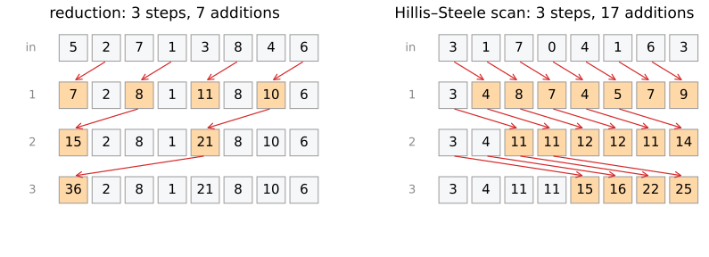

Data-parallel patterns: map, stencil, reduction, scan and histogram
Image analysis
About this lecture
A GPU needs many independent pieces of work. Many image operations obviously have them; some look sequential but are not. Five patterns cover most of image processing.
Map and stencil: one output per pixel.
Reduction: many numbers to one (sum, mean, maximum), as a tree.
Scan (prefix sum): every running total in \log_2 n steps; stream compaction.
Histogram: many threads add to few bins: atomic additions and contention.
Work and depth: how much is done, and how long the longest chain of dependent steps is.
Slides titled The math give the formulas and proofs; the ideas are complete without them.
Map and stencil: one output per pixel
Think in patterns instead of loops: if every output can be computed without the other outputs, all of them can run at once.
Map: each output from the input at the same pixel. Gain and offset, gamma, thresholding, colour conversion, adding images. Perfectly parallel; memory-bound (last unit).
Stencil: each output from a fixed neighbourhood of the input. Convolution (kernels), morphology with a small structuring element, finite differences, one step of a diffusion. Parallel per output pixel; tiles and halos (last unit).
An iterated stencil (100 diffusion steps) needs 100 passes: step t+1 needs all of step t, a global barrier between passes.
The interesting cases are the ones where outputs depend on many inputs.
Reduction: a tree
Sum, mean, maximum, count of an image: many inputs, one output. A loop adds one number at a time: n - 1 steps, each waiting for the previous one.

A tree: add pairs, then pairs of pairs. 8 numbers in 3 steps, n numbers in \lceil\log_2 n\rceil steps, still n - 1 additions. On a GPU each block reduces its part in fast memory, then a second pass combines the block results. A 2048² image: 22 steps instead of 4 million.
Reductions and rounding
Recall summing many pixels: adding small numbers to a large running sum loses digits.
The tree is pairwise summation: partial sums of similar size are added. The GPU’s mean of an image is more accurate than the naive loop.
But floating-point addition is not associative: (a + b) + c can differ from a + (b + c) in the last digit.
How the work is split over blocks changes the grouping: two runs, or two GPUs, can give different last digits for the same sum.
Reproducible sums need a fixed order (fixed tree), or integer / compensated arithmetic.
Try it: reduction and the order of additions
The math: work, depth and Brent’s bound
WorkW: total number of operations. DepthD: the longest chain of operations that each need the previous one.
Sequential sum: W = n - 1, D = n - 1. Tree reduction: W = n - 1, D = \lceil\log_2 n\rceil.
Brent’s bound: with p lanes, \max\!\Big(\frac{W}{p},\ D\Big) \le t_p \le \frac{W}{p} + D.
Reduction of n = 2^{20} numbers on p = 10^4 lanes: t_p \le 105 + 20 = 125 steps, against 10^6 sequentially.
A loop where each step needs the previous one has D = W: no number of lanes helps. Depth is what a GPU cannot buy.
The math: why a tree needs associativity
A tree regroups the sum: ((a + b) + c) + d = (a + b) + (c + d). That is allowed for an associative operation: + and \times on real numbers, max, min, logical and/or, matrix products. (Mean: as a sum and a count.)
In floating point, \mathrm{fl}(\mathrm{fl}(a + b) + c) \ne \mathrm{fl}(a + \mathrm{fl}(b + c)) in general. Example in float32 (spacing 8 near 10^8): (10^8 + 1) - 10^8 = 0, \qquad (10^8 - 10^8) + 1 = 1.
Error bounds (unit roundoff u, from the bit-depth day): naive summation |\text{error}| \lesssim (n-1)\,u\sum|x_i|; pairwise (tree) \lesssim \lceil\log_2 n\rceil\,u\sum|x_i|.
Scan: every running total
The prefix sum or scan: output i = the sum of inputs 0..i (inclusive), or 0..i-1 (exclusive). It builds the integral image, the cumulative histogram, and much more.
Each running total seems to need the previous one, yet it runs in \log_2 n steps.
Hillis–Steele: in step d, every element adds the one 2^d places to its left (all at once, from the previous row; right panel of the figure above).
8 numbers: 3 steps; after step d each element holds the sum of the last 2^{d+1} inputs.
Simple, but n\log_2 n - (n - 1) additions: 17 for 8 numbers, against 7 for the loop.
Blelloch: the work-efficient scan
Up-sweep: a reduction tree that keeps its partial sums in place (block sums of 2, 4, 8, …).
Set the last element to 0.
Down-sweep: walking back down the tree, each node passes its value to its left child and gives its right child (left value + its own).
Result: the exclusive scan in 2\log_2 n steps with 2(n-1) additions, the same order of work as the loop. For large n the GPU prefers it (less work); for one block, Hillis–Steele (fewer steps).
The integral image = a scan along every row, then along every column: both are thousands of independent scans.
Try it: scans
The math: scan as a matrix
The inclusive scan is multiplication by the lower-triangular matrix of ones, y = Lx with L_{ij} = 1 for j \le i.
Hillis–Steele factorises it: with S_k the shift matrix ((S_kx)_i = x_{i-k}, zero outside), L = (I + S_{2^{m-1}})\cdots(I + S_2)(I + S_1), \qquad n = 2^m. Each factor is one parallel step: every element adds its neighbour 2^d to the left.
Check for n = 4: (I + S_2)(I + S_1) has row 3 equal to (1, 1, 1, 1), because 1 + S_1 + S_2 + S_3 covers every shift exactly once (binary representation of 0–3).
The integral image of an H\times W image A: L_H\,A\,L_W^\top: a scan of every column, then of every row, a separable linear map.
Stream compaction
Keep only some elements (the foreground pixels, the unfinished rays, the detected spots), densely packed:
a 0/1 mask of the elements to keep (a map);
its exclusive scan: element i’s value is the number of kept elements before it, i.e. its output position;
every kept element writes itself to that position (a scatter without conflicts).
All three steps are parallel. Uses: building the list of object pixels, of edge pixels, of active cells; radix sort; and the cure for divergence (last unit): compact the pixels that need the expensive branch into a dense list, so that they fill whole warps.
Histogram: atomic additions
Each thread looks at one pixel and adds 1 to bin h(I_p) (histograms). Many threads, few bins, positions that depend on the data.
Two threads incrementing the same bin at the same time would both read 5 and both write 6: a count is lost. The increment must be atomic: read–add–write as one indivisible step.
Atomic updates to the same address are serialised: one per cycle. A dark image whose pixels nearly all fall into bin 0 makes every thread wait in one queue: contention.
Privatisation: each block keeps its own histogram in its fast memory, then the block histograms are added (a reduction). The queue on one bin is divided by the number of blocks.
The same for every scatter with collisions: Hough voting into an accumulator, splatting points into an image.
Try it: histogram with atomics
The math: contention
n pixels fall into bins with probabilities q_1, \dots, q_b.
Global atomics: the busiest bin receives about n\max_j q_j updates, serialised: t \approx n\max_j q_j.
Uniform image: t \approx n/b; dark image (\max q_j \approx 1): t \approx n, no parallelism at all.
Privatised over m blocks: each block’s busiest bin has about n\max_j q_j/m updates, all blocks in parallel; then m updates per global bin (or a tree of depth \log_2 m): t \approx \frac{n\max_j q_j}{m} + m.
Minimised at m \approx \sqrt{n\max_j q_j}; in practice, m = the number of blocks.
Gather or scatter, and the FFT
Gather: a thread reads many inputs and writes one output (convolution, interpolation, back-projection per output pixel). No write conflicts, no atomics.
Scatter: a thread writes to many or data-dependent outputs (histograms, Hough voting, splatting, back-projection per projection ray). Needs atomics.
Rewrite scatter as gather where possible: in filtered back-projection, loop over output pixels and gather from every projection, instead of smearing every ray into the image.
The FFT (Fourier): \log_2 n passes, each a map over pairs of values (butterflies): regular and parallel, but each pass moves all the data: bandwidth-bound. A 2D FFT = 1D FFTs along rows, then columns (coalescing: transpose in between).
Summary
Map and stencil: one output per pixel, trivially parallel; iterated stencils need one pass per step.
Reduction: a tree, \log_2 n steps, n - 1 additions; it is pairwise summation, but its last digits depend on the split.
Scan: Hillis–Steele (\log_2 n steps, n\log_2 n work) or Blelloch (2\log_2 n steps, 2n work); integral images and stream compaction are built on it.
Histogram: atomic additions; contention on popular bins; privatise per block.
Work and depth: with p lanes, time \le W/p + D. A GPU shortens W/p, never D.